Practical Malware Analysis - Lab 18
Your goal for the labs in this chapter is simply to unpack the code for further analysis. For each lab, you should try to unpack the code so that other static analysis techniques can be used. While you may be able to find an automated unpacker that will work with some of these labs, automated unpackers won’t help you learn the skills you need when you encounter custom packers. Also, once you master unpacking, you may be able to manually unpack a file in less time than it takes to find, download, and use an automated unpacker. Each lab is a packed version of a lab from a previous chapter. Your task in each case is to unpack the lab and identify the chapter in which it appeared. The files are Lab18-01.exe through Lab18-05.exe.
Lab 18-1
Openning it in exeinfo we see it is packed with UPX so we could unpack it with
UPX -d file.exe
but i will unpack it manually, Open it in IDA we get this
It has very few libraries (as it is packed) with one standing out urlmon and since it is using VirtualAlloc we can use it for hardware read breakpoint for the place in memory it will write the malware to
the urlmon is used in a packed section

The graph view of the unpacking stub is dreadful, i will look for the tail jumps

Something interesting a jump for location over 0x8000 away, also before it some weird instructions (like cmp esp,eax), so this is likely our tail jump opening in x32dbg to test it

The unpacking stub started with pushad, looking at the stack see interesting memory address setting another hardware read breakpoint there (first on the stack click read memory in dump then in dump set the breakpoint)
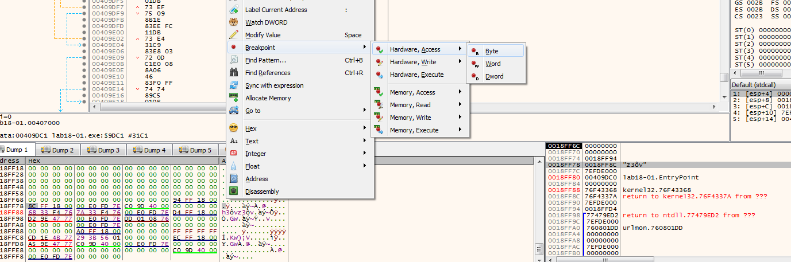We arrive near out suspected tail jump
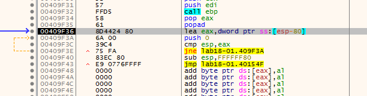and here is the memory dump,(notice at stack there is MZ which is the start of exe file)
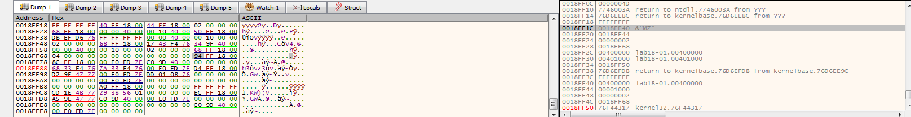opening scylla plugin in x32dbg then type memory that will be jumped to as our OEP and then click on IAT Autosearch (to autosearch for IAT import address table)
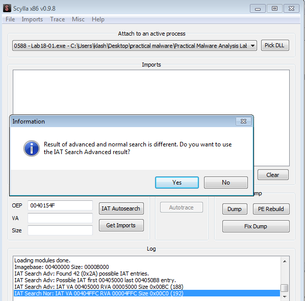clicking yes, it was successful

Then click Get imports then clicking Dump

we find our malware functional with full imports
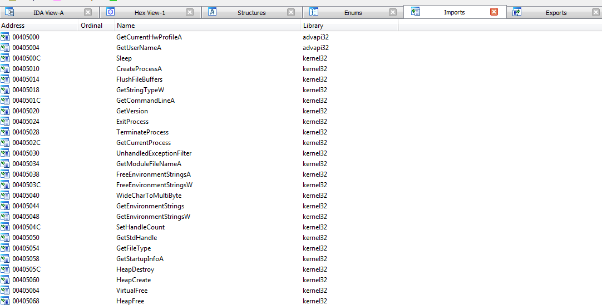the malware is the same as Lab14-01.exe
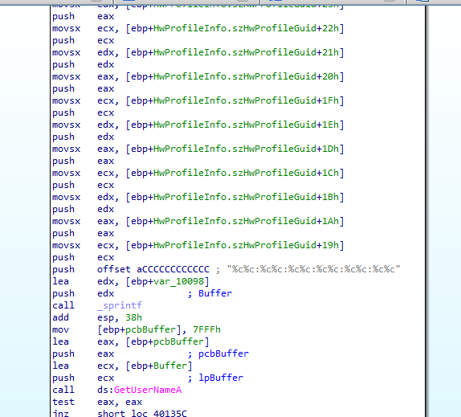Lab 18-2
Running the malware in peid we see it is packed with FSG 1.0
looking at imports
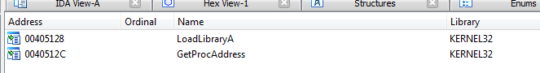since i didnt notice a tail jump, i will follow the getprocadress breakpoint technique, setting bp at getprocadress in x32dbg then work backwards to find the OEP (as that function is used for getting addresses of the libraries that will be used), i also set another breakpoint at this pushed memory address

We hit the hardware read breakpoint

suspecting this maybe our OEP but no it failed to IAT auto search
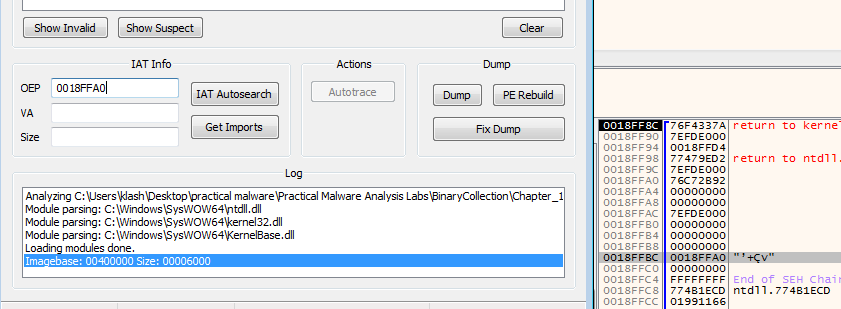Looks like this isn’t the memory we want, so keep running till we find our break at getprocadress

Reading the around code we find some pushed data (with MZ the start of exe file) then calling an address suspecting that may be our OEP
we find our Lab07-02.exe but with wrong entry point
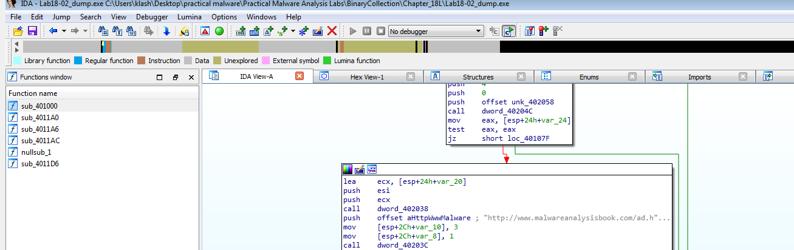Using ollydbg, we can easily just find OEP by section hop trace over, then dump debugged process
and we get the same exe
Lab 18-3
In peid it is packed using PECompact
Imports the libraries i will break GetProcAddress and VirtualAlloc
opening it in x32dbg, at the start we see pushad
In the stack, i set bp at 18FF7C at the stack, and 7EFDE000, 76F43368 in memory
our bp at 18FF7C is hit (with popad)
Hitting we step over we get this which is likely our OEP (as retn pops what is on stack then jumps to it)
we can dump it with scylla but Imports failed to get it
Going over breakpoint GetProcAddress we can get the imports, found also its place in memory
and we get the Lab09-02.exe
Lab 18-4
exeinfo shows it is packed with Aspack v2.12
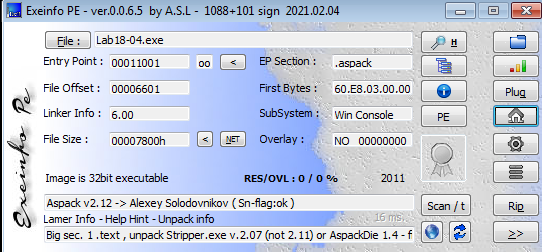imports shows quite important information
I set bp at GetProcAddress as usual, we get hit before entrypoint
and here it is preparing imports for the packed malware
and we can see where it is getting its data from the stack
Then we hit our entrypoint with pushad
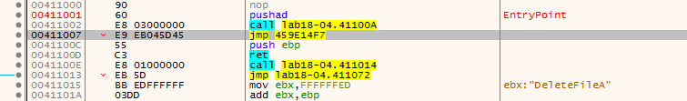so i set hardware breakpoint on that unusual memory in the stack when it is popped
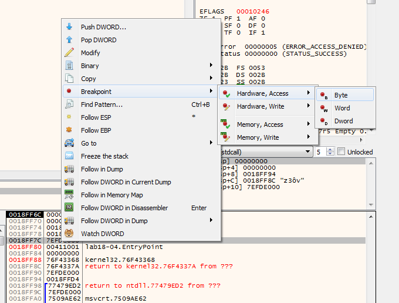we get a hit
Stepping over we see our tail jump
Trying scylla here with the jump address but fail

Viewing it in memory (we could dump it from here)
Stepping over the retn so we go to our tail jump then try scylla
dumped, we see the same exe as Lab09-01.exe

Lab 18-5
DIE shows it is packed with UPACK
PStudio shows zero imports
We hit the entrypoint with a few pushes
adding hardware breakpoint at those stack addresses (waiting for pop for the unpacking stub to finish)
we hit one of breakpoints
Stepping over we see Something interesting pushing ebx then calling ebp
Looking at ebx
calling scylla on that address
but we get incomplete exe so returning to x32 for next breakpoint
calling scylla for that memory address
it is the same as Lab07-01.exe